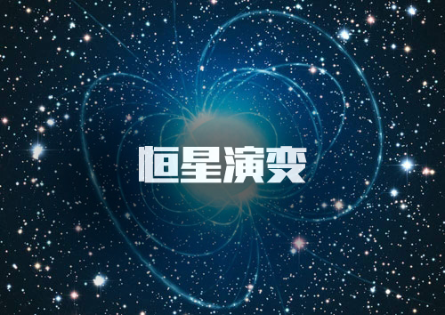

前行:星球崛起
- 


星系观测简史
一.星系的发现
在1610年，伽利略使用他的望远镜研究天空中明亮的带状物，也就是当时所知的银河[3] ，并且发现它是数量庞大但光度暗淡的恒星聚集而成的。在1755年的一篇论文，伊曼纽尔·康德借鉴更早期由托马斯·怀特工作完成的素描图，推测(正确的)星系可能是由数量庞大的恒星转动体，经由重力的牵引聚集在一起，就如同我们的太阳系，只是规模更为庞大。恒星聚集成盘状，我们由盘内透视的效果，将会看成一条在夜空中的光带。康德也猜想某些在夜空中看见的星云可能是独立的星系。
二.星系区分
在18世纪接近尾声时，梅西尔完成了梅西尔目录，收录了103个明亮的星云。不久之后，威廉·赫协尔也完成了收录多达5,000个星云的目录。在1845年，罗斯勋爵建造了一架新的望远镜，能够区分出椭圆星系和螺旋星系，他也在这些星云中找到了一些独立的点，为康德早先的说法提供了证据。但是，星云仍未能获得一致认同是遥远的星系，直到1920年代早期哈勃使用新的大望远镜才获得确认。哈勃分辨出螺旋星系外围中单独的恒星，并且辨认出其中有些是造父变星，因而可以估计出这些星云状天体的距离:它们的距离实在太远，以致不可能是银河系的一部分。
三. 描述
在1936年，哈勃制定了现称哈柏序列，并仍被使用的星系分类法。第一位尝试描述银河系的形状和太阳位置的天文学家是威廉·赫协尔，他在1785年小心的计算天空中在不同区域的恒星数目，得到了太阳系在中心的椭圆星系的图像，这与1920年卡普坦得到的结果非常类似，只是比较小些(直径大约15,00秒差距)。哈洛·夏普利使用另一种不同的方法，建立在球状星团的分布上，得到了一幅完全不同的图像:一个直径约70,000秒差距的扁平盘状，而且太阳在远离中心的位置上。但两者的分析都没有考虑到星际尘埃在银河盘面上造成的光线的吸收的量;一旦罗伯特·朱利叶斯·庄普勒在1930年经由研究疏散星团确定了这个作用之后，我们所认知的银河系图样就浮现出来了。 在1944年，亨德力克·赫尔斯特预言氢原子会辐射出21公分波长的微波，结果在1951年便发现来自星际氢原子的辐射线。这条辐射线允许对星系做更深入的研究，因为他不会被星际尘埃吸收，并且来自他的都卜勒位移能够映像出星系内气体的运动。这些观测导致转动的假定，分辨出在星系中心的棒状结构，配合无线电望远镜，在其它星系的氢原子也能被追踪到。在1970年，维拉·鲁宾的研究发现星系可见的总质量(恒星和气体)不能适当的说明星系中气体的转动速度。如今星系自转问题已经用于解释未能观察到的大量暗物质。
从1990年代开始，哈柏太空望远镜提高了观测的效益，尤其是，他确认了神秘的暗物质不可能是在星系中的暗弱小天体。哈柏深空，对天空的一个区域进行极长时间的曝光，提供了宇宙中可能有多达1,750亿个星系的可能证据。在不可见光的光谱侦测技术上的改进(无线电望远镜、红外线摄影机、X射线望远镜)，让人类可以见到连哈柏太空望远镜也看不见的其它星系。特别是，对天空中隐匿带(天空中被银河系遮蔽的部分)的星系巡天，揭露了相当数量的新星系。
星系分类
星系主要分成三类:椭圆星系、螺旋星系和不规则星系。对星系类型更明确与广泛的描述会在哈柏序列的条目中叙述。因为哈柏序列是根据视觉的型态，他也许会错过某些星系的重要特征，例如恒星形成率(在星爆星系或活跃星系的核心)。 透镜星系是介于椭圆星系和旋涡星系之间的一种星系。
根据哈勃星系分类法，星系的类型E表示椭圆星系，S是螺旋星系，SB是棒旋星系，S0是透镜星系。
一.椭圆星系
哈勃星系分类法根据椭圆星系椭率的估计进行分类，从E0，接近圆形的，到E7，非常瘦长的。这些星系，不论视线的角度是如何，都有着椭圆形的外观。她们看似没有任何的结构，而且相对来说星际物质的成分也很少。通常这些星系会有少量的疏散星团和少量新形成的恒星，取而代之的是老年的，与以各种不同方向环绕星系的中心，已经成熟的恒星为主。她们的一些性质类似小了许多的球状星团。
大部分的星系都是椭圆星系，许多椭圆星系相信是经由星系的交互作用，碰撞或是合并，产生的。她们可以长成极大的体积(与螺旋星系比较)而且巨大的椭圆星系经常出现在星系群的中心区域。星爆星系是星系碰撞后的结果，可能导致巨大椭圆星系的形成。
椭圆星系分为七种类型，按星系椭圆的扁率从小到大分别用E0-E7表示，最大值7是任意确定的。该分类法只限于从地球上所见的星系外形，原因是很难确定椭圆星系在空间中的角度。
不规则星系没有一定的形状，而且含有更多的尘埃和气体，用Irr表示。另有一类用S0表示的透镜型星系，表示介于椭圆星系和旋涡星系之间的过渡阶段的星系。
属E0型椭圆星系的NGC4552。该星系位于室女座。
NGC4486，同样位于室女座，属E1型椭圆星系。
NGC4479属于E4型椭圆星系，位于室女座。
NGC205椭圆星系，属于E6型，位于仙女座。
位于六分仪座的NGC3115，属E7型椭圆星系，也有把它归为S0型的。
二.螺旋星系
在螺旋星系，螺旋臂的形状近似对数螺线，在理论上显示这是大量恒星一致转动造成的一种干扰模式。像恒星一样，螺旋臂也绕着中心旋转，但是旋转的角速度并不是常数，这意味着恒星会穿越过螺旋臂，螺旋臂则是高密度区或是密度波。当恒星进入螺旋臂，他们会减速，因而创造出更高的密度;这就类似波将在高速公路上的车速延缓一样。螺旋臂能被看见，是因为高密度促使恒星在此处诞生，因而螺旋臂上有许多明亮和年轻的恒星。
我们自己的星系，银河系，有时就简称为银河，是一个有巨大星系盘的棒旋星系，直径大约三万秒差距或是十万光年，厚度则约为三千光年;拥有约三千亿颗恒星(3×1011)和大约六千亿颗太阳的质量。
三.旋涡星系
(Spiral Galaxy, S-type Galaxy)具有旋涡结构的河外星系称为旋涡星系，在哈勃的星系分类中用S代表.螺旋星系的螺旋形状，最早是在1845年观测猎犬座星系M51时发现的.螺旋星系的中心区域为透镜状，周围围绕着扁平的圆盘.从隆起的核球两端延伸出若干条螺线状旋臂，叠加在星系盘上.螺旋星系可分为正常漩涡星系和棒旋星系两种.按哈勃分类，正常漩涡星系又分为 a、b、c三种次型:Sa型中心区大，稀疏地分布着紧卷旋臂;Sb型中心区较小，旋臂较大并较开展;Sc型中心区为小亮核，旋臂大而松弛。除了旋臂上集聚高光度O、B型星、超巨星、电离氢区外，同时还有大量的尘埃和气体分布在星系盘上。从侧面看在主平面上呈现为一条窄的尘埃带，有明显的消光现象。漩涡星系通常有一个笼罩整体的、结构稀疏的晕，叫做星系晕。其中主要是星族Ⅱ天体，其典型代表是球状星团。一个中等质量的漩涡星系往往有100~300个球状星团。随机地散布在星系盘周围空间。在往外，可能还有更稀疏的气体球，称为星系晕。漩涡星系的质量为十亿到一万亿个太阳质量，对应的光度是绝对星等-15~-21等。直径范围是5~50Kpc。Sa型星系的总光谱型为K，Sb型为F~K, Sc型为A~F。产生总光谱的主要天体既有高光度早型星，又有高光度晚型星。星族Ⅰ天体组成星系盘和旋臂，星族Ⅱ天体主要构成星系核、星系晕和星系冕。
四.棒旋星系
(Barred Sprial Galaxy, SB-type Galaxy)棒旋星系是中心呈长棒形状的螺旋形星系，一般的螺旋形星系的中心是有圆核的，而棒旋形星系的中心是棒形状，棒的两边有旋形的臂向外伸展。
旋涡星系，分为两族，一族是中央有棒状结构的棒旋星系，用SB表示
另一族是无棒状结构的旋涡星系，用S表示。这两类星系又分别被细分为三个次型，分别用下标a、b、c表示星系核的大小和旋臂缠绕的松紧程度。
位于狮子座的NGC3623，属Sa型旋涡星系。
属Sb型的NGC3627旋涡星系，位于狮子座。
NGC3351位于狮子座，属SBb型棒旋星系。
SBc型棒旋星系NGC3992，位于大熊座。
五.矮星系
球状星团半人马座
尽管椭圆星系和螺旋星系是很明显与突出的，宇宙中大部分的星系都是矮星系，这些微小的星系都不到银河系百分之一的大小，只拥有数十亿颗的恒星。许多矮星系可能都会环绕着单独的大星系运转，我们的银河至少就有一打这样的矮星系。矮星系依样可以分成椭圆、螺旋和不规则。因为矮椭圆星系外观上与大的椭圆星系有一点相似，因此她们经常被称为矮球状星系来取代。
猎犬座的NGC5194旋涡星系，属Sc型。左侧是一个矮星系。
六.活跃星系
有部分我们观察到的星系被分类为活跃星系，也就是说，来自星系的总能量除了恒星、尘埃和星际介质之外，还有另一个重要的来源。像这样的活跃星系核的标准模型，根据能量的分布，认为是物质掉落入位在核心区域的超重质量黑洞造成的。
以X射线的形式，辐射出高能量的星系被分类为赛弗特星系、类星体、或蝎虎BL类星体。从由核心喷发出的相对喷流发射出无线电频率的活跃星系被分类为无线电星系。在统一场论的星系模型中，这些不同类的星系被解释为从不同角度观察所得到的结果。
七.不规则星系
不规则星系(Irregular Galaxy, Irr-type Galaxy) 外形不规则，没有明显的核和旋臂，没有盘状对称结构或者看不出有旋转对称性的星系，用字母Irr表示。在全天最亮星系中，不规则星系只占5%。 按星系分类法，不规则星系分为Irr I型和Irr II型两类。 I型的是典型的不规则星系，除具有上述的一般特征外，有的还有隐约可见不甚规则的棒状结构。它们是矮星系，质量为太阳的一亿倍到十亿倍，也有可高达100亿倍太阳质量的。 它们的体积小，长径的幅度为2~9千秒差距。星族成分和Sc型螺旋星系相似:O-B型星、电离氢区、气体和尘埃等年轻的星族I天体占很大比例。 II型的具有无定型的外貌,分辨不出恒星和星团等组成成分，而且往往有明显的尘埃带。 一部分II型不规则星系可能是正在爆发或爆发后的星系，另一些则是受伴星系的引力扰动而扭曲了的星系。所以I型和II型不规则星系的起源可能完全不同。
银河系的卫星系"大麦哲伦云"，属不规则星系。
NGC3034不规则星系，位于大熊星座。
独立星系和从属星系
按照星系之间是否有隶属关系，将宇宙中的星系划分为独立星系和从属星系。在宇宙空间中独立运行，它没有环绕中心体旋转，这样的星系叫做独立星系。而环绕中心体运行的星系如太阳系绕银心运转，地月星系绕太阳运转，这样的星系叫做从属星系。
核旋转星系和核不旋转星系
按照中心星是否旋转，划分为核旋转星系和核不旋转星系。在宇宙中独立星系它的核有的旋转有的不旋转。而从属星系它的核都是旋转的。
直线运动星系和曲线运动星系
按照星系运行的轨迹，划分为直线运动星系和曲线运动星系。在宇宙空间中，那些独立星系在主星带领下按照主星形成时的射线方向在宇宙空间内进行直线运行。有的星系如从属星系则是绕着主星进行曲线运行。
系内星系和宇宙星系
按照星系所在的空间位置，划分为系内星系和宇宙星系。凡是在星系内运动的星系叫做系内星系;凡是在星系外宇宙空间里独立运动的星系叫做宇宙星系。
年老星系和年轻星系
按照星系形成的年龄，划分为年老星系和年轻星系。凡是那些在宇宙空间中或在星系内部形成时间比较长年龄大的星系叫做年老星系，年老的星系大都已演化成为比较规则的星系;在宇宙空间或在星系内部有的星系刚刚形成或形成不久，这样的星系叫做年轻的星系，年轻的星系大都呈不规则状态。
中心式星系和伴星式星系
按照星系中星球的关系，划分为中心式星系和伴星式星系。由众小质量星球绕大质量星球运动所组成的星系叫做中心式星系，如太阳系、银河系等;由两颗星球互绕二者中心质点运动所组成的星系叫做伴星式星系，如地球和月亮所组成的地月星系。
星系形成和演化
一.星系的形成
星系的形成包含了两方面，一是上下理论，二是下上理论。上下理论是指:星系乃由一次宇宙大爆炸中形成，发生在137亿年前。另一个学说则是指:星系乃由宇宙中旳微尘所形成。原本宇宙有大量的球状星团(globularcluster)，后来这些星体相互碰撞而毁灭，剩下微尘。这些微尘经过组合，而形成星系。
虽然在今时今日，关于星系形成的学问有不少人质疑，但大抵在星系形成研究方面，随着研究的深入，已伸展至星系演化方面。在天文物理学中，有关星系形成和演化的问题有:
在一个均质的宇宙中，我们是否居住在一个独特而与众不同的场所?
星系是如何形成的?
星系是如何随着时间改变的?
二.星系的演化
按照宇宙大爆炸理论，第一代星系大概形成于大爆炸发生后十亿年。在宇宙诞生的最初瞬间，有一次原始能量的爆发。随着宇宙的膨胀和冷却，引力开始发挥作用，然后，幼年宇宙进入一个称为"暴涨"的短暂阶段。原始能量分布中的微小涨落随着宇宙的暴涨也从微观尺度急剧放大，从而形成了一些"沟"，星系团就是沿着这些"沟"形成的。
哈勃太空望远镜拍摄的遥远的年轻星系照片，其中包含有正在形成中的星系团(原星系)。 十八个正在形成中的星系团的单独照片。每个团快距地球约一百十亿光年。著名的"哈勃深空"照片。展示了一千多个在宇宙形成后不到十亿年内形成的年轻星系。 哈勃深空图片。箭头所指的可能是迄今为止发现的最遥远的星系。阿贝尔2218星系群。照片反映了宇宙中的"引力透镜"现象。 两个相邻的星系NGC1410、NGC1409因引力作用而互相吸取物质。
随着暴涨的转瞬即逝，宇宙又回复到如今日所见的那样通常的膨胀速率。在宇宙诞生后的第一秒钟，随着宇宙的持续膨胀冷却，在能量较为"稠密"的区域，大量质子、中子和电子从背景能量中凝聚出来。一百秒后，质子和中子开始结合成氦原子核。在不到两分钟的时间内，构成自然界的所有原子的成分就都产生出来了。大约再经过三十万年，宇宙就已冷却到氢原子核和氦原子核足以俘获电子而形成原子了。这些原子在引力作用下缓慢地聚集成巨大的纤维状的云。不久，星系就在其中形成了。大爆炸发生过后十亿年，氢云和氦云开始在引力作用下集结成团。随着云团的成长，初生的星系即原星系开始形成。那时的宇宙较小，各个原星系之间靠得比较近，因此相互作用很强。于是，在较稀薄较大的云中凝聚出一些较小的云，而其余部分则被邻近的云所吞并。 同时，原星系由于氢和氦的不断落入而逐渐增大。原星系的质量变得越大，它们吸引的气体也就越多。一个个云团各自的运动加上它们之间的相互作用，最终使得原星系开始缓慢自转。这些云团在引力的作用下进一步坍缩，一些自转较快的云团形成了盘状;其余的大致成为椭球形。这些原始的星系在获得了足够的物质后，便在其中开始形成恒星。这时的宇宙面貌与今天便已经差不多了。星系成群地聚集在一起，就像我们地球上海洋中的群岛一样镶嵌在宇宙空间浩瀚的气体云中，这样的星系团和星系际气体伸展成纤维状的结构，长度可以达到数亿光年。如此大尺度的星系的群集在广阔的空间呈现为球形。
三.星系死亡
在过去的20年内，天文学家对宇宙星系展开了研究，发现宇宙星系几乎可分为两类，一种是含有大量气体的星系，能够为恒星形成提供足够的原材料，内部拥有恒星形成区 ;另一种星系就是接近死亡的星系，内部几乎没有足够的原材料，恒星形成的速率大大降低，有些几乎没有新的恒星出现，于是科学家就开始研究准死亡状态星系的致死原因。来自英国剑桥大学的天文学家Yingjie Peng称长达数十年的研究表明，那些星系是被"勒死"的。
宇宙星系的"死亡"案件被认为是普遍的存在的谋杀案，科学家在过去数十年内虽然观测到星系内恒星形成速率降低，但不能确定什么机制扼杀了恒星形成，于是这个谜底就变成20年来最具挑战的难题了。科学家提出了两个途径来解释星系中恒星形成速率降低的问题，一种解释是新生恒星被逐渐"扼杀"，恒星形成所需要的气体物质逐渐减少，原因来自星系内部，比如黑洞。另一个解释是其他星系的引力对另一个星系产生作用，导致后者气体被剥离，无法形成新恒星。
为了验证这个猜想，科学家对银河系附近大约2.6万个星系进行观测，发现了大多数星系死亡都有类似的共同点，那就是窒息，科学家认为这是第一个确凿的证据显示星系是被勒死的。由于恒星主要有氢和氦构成，于是科学家将注意力放在寻找金属浓度上，因为恒星通过核聚变可产生多种金属元素。结果发现死亡星系内拥有大量的金属元素，这一结论与星系被绞杀的过程相一致。
计算机模型表面，绞杀一个星系需要40亿年才能熄灭恒星形成，几乎可适用于95%以上的星系演化。但对于一些质量较大的星系，科学家还没有足够的证据揭示它们的死亡原因。随着美国宇航局詹姆斯-韦伯空间望远镜在2018年升空，我们将通过多目标光学仪与近红外光谱观测宇宙星系，找出它们的死亡原因。本项研究发表在5月14日出版的Nature杂志上。

恒星分类
1. 光谱分类
普遍认可的恒星分类是光谱分类。
依据恒星光谱中的某些特征与谱线和谱带，以及这些谱线和谱带的相对强度，同时也考虑连续谱的能量分布，将恒星划分为以下大类型。
2. 依据光度与温度的比较图
依据恒星在赫罗图的位置，将恒星划分为白矮星、主序星、巨星、超巨星等。
3. 依据恒星的稳定性
划分为稳定、不稳定恒星。
4. 依据恒星体积与质量
划分为小型、中型、大型、超大型恒星。
5.依据恒星与其他星球的关系以及运动情况，划分为以下类型。
孤星型恒星
孤星型恒星在宇宙空间孤立存在，不在星系中，没有与其它星球形成关系。该类型恒星在宇宙中一般呈直线运动。其形态为球形和非球形。
主星型恒星
这类恒星捕获小质量天体形成绕其旋转的星系，恒星位于中心是主星，其它小质量天体如行星彗星等绕其旋转是从星。在宇宙中一般呈直线运动。形态为球形和非球形。
从属型恒星
这类恒星绕大质量天体进行转动，没有小质量天体绕其旋转。该类型恒星存在公转和自转，其运动轨道为圆形、近圆形和椭圆形，其形态为球形或近球形。
伴星型恒星
这类恒星与大质量体星球形成相互绕转，形成伴星关系。伴星间围绕共同质点公转，存在自转和公转，其形态为球形或近球形。
混合型恒星
这类恒星绕大质量天体进行转动，同时有小质量天体绕其旋转或有伴星。存在公转和自转，其形态为球形或近球形。如太阳。
6.依据恒星成因或起源
划分为碎块型恒星、凝聚型恒星、捕获型恒星。
7.依据恒星结构
划分为简单型恒星即非圈层状结构恒星、复杂型恒星即圈层状结构恒星。
8.依据温度
划分为低温型恒星、中低温型恒星、中温型恒星、中高温型恒星、高温型恒星。
9.依据寿命
划分为短命型恒星、长命型恒星。
恒星演化
诞生
恒星的演化开始于巨分子云。一个星系中大多数虚空的密度是每立方厘米大约0.1到1个原子，但是巨分子云的密度是每立方厘米数百万个原子。一个巨分子云包含数十万到数千万个太阳质量，直径为50到300光年。在巨分子云环绕星系旋转时，一些事件可能造成它的引力坍缩。巨分子云可能互相冲撞，或者穿越旋臂的稠密部分。邻近的超新星爆发抛出的高速物质也可能是触发因素之一。最后，星系碰撞造成的星云压缩和扰动也可能形成大量恒星。
坍缩过程中的角动量守恒会造成巨分子云碎片不断分解为更小的片断。质量少于约50太阳质量的碎片会形成恒星。在这个过程中，气体被释放的势能所加热，而角动量守恒也会造成星云开始产生自转之后形成原始星。
恒星形成的初始阶段几乎完全被密集的星云气体和灰尘所掩盖。通常，正在产生恒星的星源会通过在四周光亮的气体云上造成阴影而被观测到，这被称为博克球状体。
质量非常小(小于0.08太阳质量)的原始星的温度不会到达足够开始核聚变的程度，它们会成为褐矮星，在数亿年的时光中慢慢变凉。大部分的质量更高的原始星的中心温度会达到一千万开氏度，这时氢会开始聚变成氦，恒星开始自行发光。核心的核聚变会产生足够的能量停止引力坍缩，达到一个静态平衡。恒星从此进入一个相对稳定的阶段。如果恒星附近仍有残留巨分子云碎片，那么这些碎片可能会在一个更小的尺度上继续坍缩，成为行星、小行星和彗星等行星际天体。如果巨分子云碎片形成的恒星足够接近，那么可能形成双星和多星系统。
成年期
成年期时形成主序星
恒星有不同的颜色和大小。从高热的蓝色到冷却的红色，从0.5到20个太阳质量。恒星的亮度和颜色依赖于其表面温度，而表面温度则依赖于恒星的质量。大质量的恒星需要比较多的能量来抵抗对外壳的引力，燃烧氢的速度也快得多。
恒星形成之后会落在赫罗图的主星序的特定点上。小而冷的红矮星会缓慢地燃烧氢，可能在此序列上停留数千亿年，而大而热的超巨星会在仅仅几百万年之后就离开主星序。像太阳这样的中等恒星会在此序列上停留一百亿年。太阳也位于主星序上，被认为是处于中年期。在恒星燃烧完核心中的氢之后，就会离开主星序。
中年期
中年期时形成红巨星，超巨星。
在形成几百万到几千亿年之后，恒星会消耗完核心中的氢。大质量的恒星会比小质量的恒星更快消耗完核心的氢。在消耗完核心中的氢之后，核心部分的核反应会停止，而留下一个氦核。失去了抵抗重力的核反应能量之后，恒星的外壳开始引力坍缩。核心的温度和压力像恒星形成过程中一样升高，但是在一个更高的层次上。一旦核心的温度达到了1亿开氏度，核心就开始进行氦聚变，重新通过核聚变产生能量来抵抗引力。恒星质量不足以产生氦聚变 释放热能，逐渐冷却，成为白矮星。
积热的核心会造成恒星大幅膨胀，达到在其主星序阶段的数百倍大小，成为红巨星。红巨星阶段会持续数百万年，但是大部分红巨星都是变星，不如主序星稳定。
恒星的下一步演化再一次由恒星的质量决定。
衰退期
晚年到死亡以三种可能的冷态之一为终结:白矮星，中子星，黑洞。
美国天文学家钱德拉塞卡预言:恒星核心质量小于太阳1.44倍的恒星将会演化为白矮星。核心质量大于1.44倍太阳质量而小于3.2倍太阳质量，整体为太阳8-15倍质量将演化为中子星，核心超过3.2倍太阳质量，演化为黑洞。
光谱分类
恒星分类是依据光谱和光度进行的二元分类。在通俗的简化的分类中，前者可由恒星的颜色区分，后者则大致分为"巨星"和"矮星"，比如太阳是一颗"黄矮星"，常见的名称还有"蓝巨星"和"红巨星"等。
根据维恩定律，恒星的颜色与温度有直接的关系。所以天文学家可以由恒星的光谱得知恒星的性质
依据恒星光谱，恒星从温度最高的O型，到温度低到分子可以存在于恒星大气层中的M型，可以分成好几种类型。而最主要的型态，可利用"Oh，Be A Fine Girl,Kiss Me"(也有将"girl"改为"guy")这句英文来记忆(还有许多其它形式的口诀记忆)，各种罕见的光谱也有各特殊的分类，其中比较常见的是L和T，适用于比M型温度更低和质量更小的恒星和棕矮星。每个类型由高温至低温依序以数字0到9来标示，再细分10个小类。此分类法与温度高低相当符合，但是还没有恒星被分类到温度最高的O0和O1。
另一方面，恒星还有加上"光度效应"，对应于恒星大小的二维分类法，从0(超巨星)经由III(巨星)到V(矮星)和VII(白矮星)。大多数恒星皆以燃烧氢的普通恒星，也就是主序星。当以光谱对应绝对星等绘制赫罗图时，这些恒星都分布在对角在线很窄的范围内。
太阳的类型是G2V(黄色的矮星)，是颗大小与温度都很普通的恒星。太阳被作为恒星的典型样本，并非因为它很特别，只因它是离我们最近的恒星，且其它恒星的许多特征都能以太阳作为一个单位来加之比较。
银河系结构
银盘
银盘是银河系的主要组成部分，在银河系中可探测到的物质中，有九成都在银盘范围以内。银盘外形如薄透镜，以轴对称形式分布于银心周围，其中心厚度约1万光年，不过这是微微凸起的核球的厚度，银盘本身的厚度只有两千光年，直径近10万光年，总体上说银盘非常薄。
除了1千秒差距范围内的银核绕银心作刚体定轴转动外，银盘的其他部分都绕银心作较差自转，即离银心越远转得越慢。银盘中的物质主要以恒星形式存在，占银河系总质量不到10%的星际物质，绝大部分也散布在银盘内。星际物质中，除电离氢、分子氢及多种星际分子外，还有10%的星际尘埃，这些直径在1微米左右的固态微粒是造成星际消光的主要原因，它们大都集中在银道面附近。
由于太阳位于银盘内，所以我们不容易认识银盘的起初面貌。为了探明银盘的结构，根据20世纪40年代巴德和梅奥尔对旋涡星系M31(仙女座星系)旋臂的研究得出了旋臂天体的主要类型，进而在银河系内普查这几类天体，发现了太阳附近的三段平行臂。由于星际消光作用，光学观测无法得出银盘的总体面貌。有证据表明，旋臂是星际气体集结的场所，因而对星际气体的探测就能显示出旋臂结构，而星际气体的21厘米射电谱线不受星际尘埃阻挡，几乎可达整个银河系。光学与射电观测结果都表明，银盘确实具有旋涡结构。
银盘主要由星族Ⅰ天体组成，如G~K型主序星、巨星、新星、行星状星云、天琴RR变星、长周期变星、半规则变星等。
银心
银河系的中心﹐即银河系的自转轴与银道面的交点。在星系的中心凸出部分，呈很亮的球状，直径约为两万光年，厚1万光年，这个区域由高密度的恒星组成，主要是年龄大约在100亿年以上老年的红色恒星。证据表明，在中心区域存在着一个巨大的黑洞，星系核的活动十分剧烈。
银心在人马座方向﹐1950年历元坐标为﹕赤经17°42′29″﹐赤纬-28°59′18″。
银心除作为一个几何点外﹐它的另一含义是指银河系的中心区域。太阳距银心约十千秒差距﹐位于银道面以北约八秒差距。银心与太阳系之间充斥著大量的星际尘埃﹐所以在北半球用光学望远镜难以在可见光波段看到银心。射电天文和红外观测技术兴起以后﹐人们才能透过星际尘埃﹐在2微米至73厘米波段探测到银心的信息。中性氢21厘米谱线的观测揭示﹐在距银心四千秒差距处有氢流膨胀臂﹐即所谓"三千秒差距臂"(最初将距离误定为三千秒差距﹐后虽订正为四千秒差距﹐但仍沿用旧名)。大约有1，000万个太阳质量的中性氢﹐以53km/秒的速度涌向太阳系。在银心另一侧﹐有大体同等质量的中性氢膨胀臂﹐以135km/秒的速度离银心而去。它们应是1000万~1500万年前以不对称方式从银心抛射出来的。在距银心300秒差距的天区内﹐有一个绕银心快速旋转的氢气盘﹐以70~140千米/秒的速度向外膨胀。盘内有平均直径为30秒差距的氢分子云。
在距银心70秒差距处﹐有激烈扰动的电离氢区﹐以高速向外扩张。现已得知﹐不仅大量气体从银心外涌﹐而且银心处还有一强射电源﹐即人马座A﹐它发出强烈的同步加速辐射。甚长基线干涉仪的探测表明﹐银心射电源的中心区很小﹐甚至小于十个天文单位﹐即不大于木星绕太阳的轨道。12.8微米的红外观测资料指出﹐直径为1秒差距的银核所拥有的质量﹐相当于几百万个太阳质量﹐其中约有100万个太阳质量是以恒星的形式出现的。银心区有一个大质量致密核﹐或许是一个黑洞。流入致密核心吸积盘的相对论性电子﹐在强磁场中加速﹐产生了同步加速辐射。
关于银心的最新观测表明，银河系的最核心部位基本 上全部是由白矮星组成的，数量则至少在10万颗上下。而和心中的核心，则是由大约70颗较大的白矮星组成的。至于如何观测到更多的内容，科学家表示，需要靠下一代观测设备，比如 NASA 正在建设的 James Webb 号天文望远镜来完成了。
银晕
银河晕轮弥散在银盘周围的一个球形区域内，银晕直径约为9.8万光年，这里恒星的密度很低，分布着一些由老年恒星组成的球状星团。有人认为，在银晕外面还存在着一个巨大的呈球状的射电辐射区，叫做银冕，银冕至少延伸到距银心100千秒差距或32万光年远。
银河系被直径约30千秒差距的银晕笼罩。银晕中最亮的成员是球状星团。
银冕
在天文学中，冕指天体周围的气体包层，这种天体大气最外层的灼热气体很像人们头上带的一顶帽子，裹住星星光华的"圆脸"，冕这个字最初是指古代帝王头上带的一种帽子(礼帽)，而天空的这种热气体看起来也像一顶帽子，所以现在人们就称这种气体叫银冕。太阳的冕是人们所熟知的日冕，恒星的冕称作星冕。
太阳系
太阳系位于一条叫做猎户臂的旋臂上，距离银河系中心约2.64万光年，逆时针旋转，绕银心旋转一周约需要2.5亿年。
太阳系位于猎户座旋臂靠近内侧边缘的位置上，在本星际云(Local Fluff)中，距离银河中心7.94±0.42千秒差距我们所在的旋臂与邻近的英仙臂大约相距6，500光年(通过测定离地球约6370光年的一个大质量分子云核的距离得出)。我们的太阳系，正位于所谓的银河生命带。
太阳运行的方向，也称为太阳向点，指出了太阳在银河系内游历的路径，基本上是朝向织女，靠近武仙座的方向，偏离银河中心大约86度。太阳环绕银河的轨道大致是椭圆形的，但会受到旋臂与质量分布不均匀的扰动而有些变动，我们当前在接近近银心点(太阳最接近银河中心的点)1/8轨道的位置上。
太阳系大约每2.25~2.5亿年在轨道上绕行一圈，可称为一个银河年，因此以太阳的年龄估算，太阳已经绕行银河20~25次了。太阳的轨道速度是217km/秒，换言之每8天就可以移动1个天文单位，1400年可以运行1光年的距离。
银河系波浪
科学家利用斯隆数字巡天的测光和光谱数据，对银河系的银盘进行了研究。结果颠覆了教科书上银河系的形象，表明银盘存在波浪状的结构，并且银盘的尺寸也可能比传统认为的更大。
传统观点认为，银河系的银盘应该是一个平滑的盘，从银心向外密度呈指数下降，而且在银盘的上下两侧(或者说南北两侧)，密度应该是镜像对称的。2002年，美国伦斯勒理工学院的海蒂·纽伯格及其同事发现，在银盘的最外侧边缘存在恒星密集分布的团块，这一成团子结构被称为麒麟座星环。后来，其他天文学家又在麒麟座星环以外发现了另一个类似的子结构，被称为三角座-仙女座星流。
一个研究团队对2002年斯隆数字巡天的观测数据作了进一步分析，发现了另外两个类似子结构存在的迹象。这另外两个子结构位于麒麟座星环和我们的太阳之间。离太阳最近的子结构，距离银心大约3万光年，银盘以北的恒星密度超出预期；另一个子结构距离银心大约4万~4.5万光年，银盘以南的恒星密度超出预期。
它们分别命名为北近结构(north near structure)和南中结构(south middle structure)。
常用数据
质量≈10E11太阳质量
直径≈100千秒差距
银心方向：α=17h42m.5，δ=-28°59′[10]
太阳距银心≈9千秒差距
北银极：α=12h49m， δ=-27°2'
太阳处银河系旋转速度≈250公里/秒
太阳处银河系旋转周期≈220E6年
相对于3K背景的运动速度≈600公里/秒
(朝向α=10h，δ=-20°方向)
银河全景图
美国航天局(NASA)公布了数字版银河系360度全景图，该图片由"斯皮策"太空望远镜过去10年拍摄的200万张照片拼接而成，包括银河系一半以上的恒星，像素达200亿，如果打印出来，需要体育场那么大的地方才能展示，因此美国航天局决定发布其数字版，方便天文迷查询。
人们惊奇地发现，如今想一览银河系已简单到只要一点鼠标即可。其实，这张图片展示的仅是地球天空中大约3%的区域，却包含了银河系里超过一半的星辰。
2003年升空的"斯皮策"太空望远镜已对从太阳系的小行星到可观测宇宙边缘的遥远星系进行了逾10年的研究。在此期间，为完成银河系的红外图像记录，"斯皮策"已工作4142个小时。这是首次在一张巨幅全景图上将所有星辰的图片拼接再现。
我们的星系是个扁平的螺旋盘，太阳系位于其中一个螺旋臂上。当我们望向星系中心时，总能看到一个充满星辰又尘土飞扬的区域。由于大量尘埃和气体阻挡了可见光，因此在地球上无法直接用光学望远镜观测到银河系中心附近的区域。而由于红外线的波长比可见光长，所以红外望远镜"斯皮策"能穿透密集的尘埃并观测到更遥远的银河系中心地带。
天文学家根据获取的数据绘制了一幅更精确的银河系中心带星图，并指出银河系比我们先前所想的更大一些。这些数据使科学家能建立起一个更全面立体的星系模型。
银河系质量
哥伦比亚大学的科学家对银河系的质量进行了精确计算，最新的结果认为银河系质量大约是太阳的2100亿倍，包括银河系边缘拥有数千颗恒星的恒星团。科学家通过超级计算机运行后获得了银河系质量分布图，目前计算出的银河系质量是最为精确的，这项研究结果有助于我们对银河系的结构进行研究，比如银河系的跨度等。之前我们对银河系质量的估计来自观测恒星移动的速度，其中拥有巨大的误差。
为了得出这个结论，研究人员提出了一种新的方法来估算银河系质量，来自哥伦比亚大学的博士Andreas Kupper负责本项研究。研究小组认为可以通过斯隆数字巡天观测到由于银河系质量所导致的波动现象，利用哥伦比亚大学的超级计算机模拟出多少质量能够诱发如此规模的波动。当然其中还要考虑银河系的自转速度、不同球状星团的位置等，这些因素对波动的产生有着一定的影响。通过这种方式并结合银河系大约12万光年的直径，科学家计算出银河系的质量为2100亿倍太阳质量。
这个数字虽然是截止2015年较为精确的值，但仍然存在不确定性，偏差可能达到20%左右，比之前银河系的质量估计值偏差要小很多。早前的数据认为银河系的质量是太阳的7500亿倍，甚至一度达到1万亿倍，误差率达到100%，几乎无法确定银河系的具体质量。虽然我们对银河系的质量有了进一步的理解，但科学家认为这个值仍然不太准确，因为银河系的直径还无法确定。计算使用了12万光年的值，但有研究显示银河系的真实直径可能达到180万光年，部分物质与仙女座星系发生了重叠。
在银河系附近还有大量的暗物质无法观测，大多数恒星聚集在4万光年的半径内，之外几乎完全是由暗物质统治，因此银河系内还有许多无法观测到的暗物质质量。科学家正在使用斯隆数字巡天，以便对银河系内的恒星进行更加精确定位。银河系的大小在宇宙中应当属于中流水平，不会太"重"也不会太"瘦"，下一步科学家计划继续对银河系质量进行研究，并与宇宙中的其他星系进行对比。

结构组成
太阳
符号:⊙太阳是太阳系的母星，也是太阳系里唯一自身会发光的天体，也是最主要和最重要的成员。它有足够的质量(约为地球的33万倍)让内部的压力与密度足以抑制和承受核聚变产生的巨大能量，并以辐射的形式，例如可见光，让能量稳定地进入太空。
太阳在分类上是一颗中等大小的黄矮星，不过这样的名称很容易让人误会，其实在我们的星系中，太阳是相当大与明亮的。恒星是依据赫罗图的表面温度与亮度对应关系来分类的。通常，温度高的恒星也会比较明亮，而遵循此一规律的恒星都会位在所谓的主序带上，太阳就在这个带子的中央。但是，比太阳大且亮的星并不多，而比较暗淡和低温的恒星则很多。
太阳在恒星演化的阶段正处于壮年期，尚未用尽在核心进行核聚变的氢。太阳的亮度仍会与日俱增，早期的亮度只是当代的75%。计算太阳内部氢与氦的比例，认为太阳已经完成生命周期的一半，在大约50亿年后耗尽进行核聚变的氢，太阳将离开主序星阶段，并变成更大与更加明亮，但表面温度却降低的红巨星，亮度将是太阳中年时的数千倍。太阳是在宇宙演化后期才诞生的第一星族恒星，它比第二星族的恒星拥有更多的比氢和氦重的金属(这是天文学的说法:原子序数大于氦的都是金属。)。比氢和氦重的元素是在恒星的核心形成的，必须经由超新星爆炸才能释入宇宙的空间内。换言之，第一代恒星死亡之后宇宙中才有这些重元素。最老的恒星只有少量的金属，后来诞生的才有较多的金属。高金属含量被认为是太阳能发展出行星系统的关键，因为行星是由累积的金属物质形成的。
行星际物质
除了光，太阳也不断的放射出电子流(等离子)，也就是所谓的太阳风。这条微粒子流的速度为每小时150万公里，在太阳系内创造出稀薄的大气层(太阳圈)，范围至少达到100天文单位(日球层顶)，也就是我们所认知的行星际物质。 太阳的黑子周期(11年)和频繁的闪焰、日冕物质抛射在太阳圈内造成的干扰，产生了太空气候。伴随太阳自转而转动的磁场在行星际物质中所产生的太阳圈电流片，是太阳系内最大的结构。
地球的磁场从与太阳风的互动中保护著地球大气层。水星和金星则没有磁场，太阳风使它们的大气层逐渐流失至太空中。 太阳风和地球磁场交互作用产生的极光，可以在接近地球的磁极(如南极与北极)的附近看见。
宇宙线是来自太阳系外的，太阳圈屏障著太阳系，行星的磁场也为行星自身提供了一些保护。宇宙线在星际物质内的密度和太阳磁场周期的强度变动有关，因此宇宙线在太阳系内的变动幅度究竟是多少，仍然是未知的。
行星际物质至少在在两个盘状区域内聚集成宇宙尘。第一个区域是黄道尘云，位于内太阳系，并且是黄道光的起因。它们可能是小行星带内的天体和行星相互撞击所产生的。第二个区域大约伸展在10~40天文单位的范围内，可能是柯伊伯带内的天体在相似的互相撞击下产生的。
内太阳系
内太阳系在传统上是类地行星和小行星带区域的名称，主要是由硅酸盐和金属组成的。这个区域挤在靠近太阳的范围内，半径还比木星与土星之间的距离还短。
内行星 四颗内行星或是类地行星的特点是高密度、由岩石构成、只有少量或没有卫星，也没有环系统。它们由高熔点的矿物，像是硅酸盐类的矿物，组成表面固体的地壳和半流质的地幔，以及铁、镍构成的金属核心所组成。四颗中的三颗(金星、地球、和火星)有实质的大气层，全部都有撞击坑和地质构造的表面特征(地堑和火山等)。内行星容易和比地球更接近太阳的内侧行星(水星和金星)混淆。行星运行在一个平面，朝着一个方向。
类地行星
水星(Mercury)(☿ )(0.4 天文单位)是最靠近太阳，也是最小的行星(0.055地球质量)。它没有天然的卫星，仅知的地质特征除了撞击坑外，只有大概是在早期历史与收缩期间产生的皱折山脊。 水星，包括被太阳风轰击出的气体原子，只有微不足道的大气。截至2013年，尚无法解释相对来说相当巨大的铁质核心和薄薄的地幔。假说包括巨大的冲击剥离了它的外壳，还有年轻时期的太阳能抑制了外壳的增长。
金星(Venus)(♀ )(0.7 天文单位)的体积尺寸与地球相似(0.86地球质量)，也和地球一样有厚厚的硅酸盐地幔包围着核心，还有浓厚的大气层和内部地质活动的证据。但是，它的大气密度比地球高90倍而且非常干燥，也没有天然的卫星。它是颗炙热的行星，表面的温度超过400℃，很可能是大气层中有大量的温室气体造成的。没有明确的证据显示金星的地质活动仍在进行中，但是没有磁场保护的大气应该会被耗尽，因此认为金星的大气是经由火山的爆发获得补充。
地球(Earth)(⊕ )(1 天文单位)是内行星中最大且密度最高的，也是唯一地质活动仍在持续进行中并拥有生命的行星(至今科学家还没有探索到其他来自太空的生物)。它也拥有类地行星中独一无二的水圈和被观察到的板块结构。地球的大气也于其他的行星完全不同，被存活在这儿的生物改造成含有21%的自由氧气。它只有一颗卫星，即月球;月球也是类地行星中唯一的大卫星。地球公转(太阳)一圈约365天，自转一圈约1天。(太阳并不是总是直射赤道，因为地球围绕太阳旋转时，稍稍有些倾斜。)
火星(Mars)(♂ )(1.5 天文单位)比地球和金星小(0.17地球质量)，只有以二氧化碳为主的稀薄大气，它的表面，例如奥林匹斯山有密集与巨大的火山，水手号峡谷有深邃的地堑，显示不久前仍有剧烈的地质活动。火星有两颗天然的小卫星，戴摩斯和福伯斯，可能是被捕获的小行星。
小行星带
小行星是太阳系小天体中最主要的成员，主要由岩石与不易挥发的物质组成。
主要的小行星带位于火星和木星轨道之间，距离太阳2.3至3.3 天文单位，它们被认为是在太阳系形成的过程中，受到木星引力扰动而未能聚合的残余物质。
小行星的尺度从大至数百公里、小至微米的都有。除了最大的谷神星之外，所有的小行星都被归类为太阳系小天体，但是有几颗小行星，像是灶神星、健神星，如果能被证实已经达到流体静力平衡的状态，可能会被重分类为矮行星。
小行星带拥有数万颗，可能多达数百万颗，直径在一公里以上的小天体。尽管如此，小行星带的总质量仍然不可能达到地球质量的千分之一。小行星主带的成员依然是稀稀落落的，所以至今还没有太空船在穿越时发生意外。
直径在10至10.4 米的小天体称为流星体。
谷神星(Ceres)(2.77 天文单位)是主带中最大的天体，也是主带中唯一的矮行星。它的直径接近1000公里，因此自身的引力已足以使它成为球体。它在19世纪初被发现时，被认为是一颗行星，在1850年代因为有更多的小天体被发现才重新分类为小行星;在2006年，又再度重分类为矮行星。
小行星族
在主带中的小行星可以依据轨道元素划分成几个小行星群和小行星族。小行星卫星是围绕着较大的小行星运转的小天体，它们的认定不如绕着行星的卫星那样明确，因为有些卫星几乎和被绕的母体一样大。
在主带中也有彗星，它们可能是地球上水的主要来源。
特洛依小行星的位置在木星的 L4或L5点(在行星轨道前方和后方的不稳定引力平衡点)，不过"特洛依"这个名称也被用在其他行星或卫星轨道上位于拉格朗日点上的小天体。 希耳达族是轨道周期与木星2:3共振的小行星族，当木星绕太阳公转二圈时，这群小行星会绕太阳公转三圈。
内太阳系也包含许多"淘气"的小行星与尘粒，其中有许多都会穿越内行星的轨道。
中太阳系
太阳系的中部地区是气体巨星和它们有如行星大小尺度卫星的家，许多短周期彗星，包括半人马群也在这个区域内。此区没有传统的名称，偶尔也会被归入"外太阳系"，虽然外太阳系通常是指海王星以外的区域。在这一区域的固体，主要的成分是"冰"(水、氨和甲烷)，不同于以岩石为主的内太阳系。
类木行星
在外侧的四颗行星，也称为类木行星，囊括了环绕太阳99%的已知质量。木星和土星的大气层都拥有大量的氢和氦，天王星和海王星的大气层则有较多的"冰"，像是水、氨和甲烷。有些天文学家认为它们该另成一类，称为"天王星族"或是"冰巨星"。这四颗气体巨星都有行星环，但是只有土星的环可以轻松的从地球上观察。"外行星"这个名称容易与"外侧行星"混淆，后者实际是指在地球轨道外面的行星，除了外行星外还有火星。
木星(Jupiter)(♃ )(5.2 天文单位)，主要由氢和氦组成，质量是地球的318倍，也是其他行星质量总合的2.5倍。木星的丰沛内热在它的大气层造成一些近似永久性的特征，例如云带和大红斑。木星已经被发现的卫星有63颗，最大的四颗，甘尼米德、卡利斯多、埃欧、和欧罗巴，显示出类似类地行星的特征，像是火山作用和内部的热量。甘尼米德比水星还要大，是太阳系内最大的卫星。
土星(Saturn)(不是♃，而是♄ )(9.5 天文单位)，因为有明显的环系统而著名，它与木星非常相似，例如大气层的结构。土星不是很大，质量只有地球的95倍，它有60颗已知的卫星，泰坦和恩塞拉都斯，拥有巨大的冰火山，显示出地质活动的标志。泰坦比水星大，而且是太阳系中唯一实际拥有大气层的卫星。
天王星(Uranus)(♅，符号有几种，此为其中之一 )(19.2 天文单位)，是最轻的外行星，质量是地球的14倍。它的自转轴对黄道倾斜达到90度，因此是横躺着绕着太阳公转，在行星中非常独特。在气体巨星中，它的核心温度最低，只辐射非常少的热量进入太空中。天王星已知的卫星有27颗，最大的几颗是泰坦尼亚、欧贝隆、乌姆柏里厄尔、艾瑞尔、和米兰达。
海王星(Neptune)(♆，同上天王星，此为其中之一 )(30 天文单位)虽然看起来比天王星小，但密度较高使质量仍有地球的17倍。他虽然辐射出较多的热量，但远不及木星和土星多。海王星已知有13颗卫星，最大的崔顿仍有活跃的地质活动，有着喷发液态氮的间歇泉，它也是太阳系内唯一逆行的大卫星。在海王星的轨道上有一些1:1轨道共振的小行星，组成海王星特洛伊群。
彗星
彗星归属于太阳系小天体，通常直径只有几公里，主要由具挥发性的冰组成。 它们的轨道具有高离心率，近日点一般都在内行星轨道的内侧，而远日点在冥王星之外。当一颗彗星进入内太阳系后，与太阳的接近会导致它冰冷表面的物质升华和电离，产生彗发和拖曳出由气体和尘粒组成、肉眼就可以看见的彗尾。
短周期彗星是轨道周期短于200年的彗星，长周期彗星的轨周期可以长达数千年。短周期彗星，像是哈雷彗星，被认为是来自柯伊伯带;长周期彗星，像海尔·波普彗星，则被认为起源于奥尔特云。有许多群的彗星，像是克鲁兹族彗星，可能源自一个崩溃的母体。有些彗星有着双曲线轨道，则可能来自太阳系外，但要精确的测量这些轨道是很困难的。 挥发性物质被太阳的热驱散后的彗星经常会被归类为小行星。
半人马群是散布在9至30天文单位的范围内，也就是轨道在木星和海王星之间，类似彗星以冰为主的天体。半人马群已知的最大天体是10199 Chariklo，直径在200至250 公里。第一个被发现的是2060 Chiron，因为在接近太阳时如同彗星般的产生彗发，被归类为彗星。有些天文学家将半人马族归类为柯伊伯带内部的离散天体，而视为是外部离散盘的延续。
外海王星区
在海王星之外的区域，通常称为外太阳系或是外海王星区，仍然是未被探测的广大空间。这片区域似乎是太阳系小天体的世界(最大的直径不到地球的五分之一，质量则远小于月球)，主要由岩石和冰组成。
柯伊伯带，最初的形式，被认为是由与小行星大小相似，但主要是由冰组成的碎片与残骸构成的环带，扩散在距离太阳30至500天文单位之处。这个区域被认为是短周期彗星--像是哈雷彗星--的来源。它主要由太阳系小天体组成，但是许多柯伊伯带中最大的天体，例如创神星、伐楼拿、2003 EL61、2005 FY9和厄耳枯斯等，可能都会被归类为矮行星。估计柯伊伯带内直径大于50 公里的天体会超过100000颗，但总质量可能只有地球质量的十分之一甚至只有百分之一。许多柯伊伯带的天体都有两颗以上的卫星，而且多数的轨道都不在黄道平面上。
柯伊伯带大致上可以分成共振带和传统的带两部分，共振带是由与海王星轨道有共振关系的天体组成的(当海王星公转太阳三圈就绕太阳二圈，或海王星公转两圈时只绕一圈)，其实海王星本身也算是共振带中的一员。传统的成员则是不与海王星共振，散布在39.4至47.7天文单位范围内的天体。传统的柯伊伯带天体以最初被发现的三颗之一的1992 QB1为名，被分类为类QB1天体。
冥王星(Pluto)(♇，同上，此为其中之一 )和卡戎(Charon)目前还不能确定卡戎是否应被归类为当前认为的卫星还是属于矮行星，因为冥王星和卡戎互绕轨道的质心不在任何一者的表面之下，形成了冥王星-卡戎双星系统。另外两颗很小的卫星尼克斯(Nix)与许德拉(Hydra)，则绕着冥王星和卡戎公转。
冥王星在共振带上，与海王星有着3:2的共振(冥王星绕太阳公转二圈时，海王星公转三圈)。柯伊伯带中有着这种轨道的天体统称为类冥天体。
离散盘与柯伊伯带是重叠的，但是向外延伸至更远的空间。离散盘内的天体应该是在太阳系形成的早期过程中，因为海王星向外迁徙造成的引力扰动才被从柯伊伯带抛入反复不定的轨道中。多数黄道离散天体的近日点都在柯伊伯带内，但远日点可以远至150天文单位;轨道对黄道面也有很大的倾斜角度，甚至有垂直于黄道面的。有些天文学家认为黄道离散天体应该是柯伊伯带的另一部分，并且应该称为"柯伊伯带离散天体"。
阋神星(136199 Eris)(平均距离68 天文单位)，又名齐娜，是已知最大的黄道离散天体。该矮行星距离太阳140亿公里，此外，它还有一颗卫星。从而引发了行星的辩论，在发现时候有人声称是太阳系第十大行星，但是随后冥王星落败成为了矮行星，经过激烈争论后，天文学家最后投票将太阳系行星减为8个，并将冥王星归为"矮行星"，此类别还包括厄里斯和小行星谷神星。
美国加州技术研究所的科学家2003年在太阳系的边缘发现了这颗行星，编号为2003UB313，暂时命名为齐娜，直到2005年7月29日才向外界公布这个发现。据悉，各国天文学家于2006年8月24日的国际天文学联合会大会上否认其为大行星。
据介绍，齐娜的半径约1490英里，较太阳系边缘的矮行星冥王星还要大77英里。而齐娜距离太阳90亿英里，这个距离大约是冥王星和太阳间距离的三倍,也就是大约97.6个天文单位，一个天文单位指的太阳与地球之间的距离。齐娜绕行太阳一周，得花560年。
这个星体呈圆形，最大可能是冥王星的两倍。他估计新发现的这颗星星的直径估计有2100英里，是冥王星的1.5倍。
这个星体与太阳系统的主平面保持着45度的夹角，大部分其它行星的轨道都在这个主平面里。布朗说，这就是它一直没有被发现的原因。
2016年1月20日，美国科学家宣布，在太阳发现一颗未为人知绰号"第9大行星"的巨型行星。《天文学杂志》研究员巴蒂金(KonstantinBatygin)和布朗(MikeBrown)表示，他们通过数学模型和电脑模拟发现这颗行星，虽然没有直接观察到。该星体质量约是地球的10倍，轨道与太阳平均距离比海王星的远20倍，这颗新行星绕太阳运行一周需时1万至2万年。这行星质量约是冥王星的5千倍，科学家认为这颗行星属气态，类似天王星和海王星，将是真正的第9大行星。
最远的区域
太阳系于何处结束，以及星际介质开始的位置没有明确定义的界线，因为这需要由太阳风和太阳引力两者来决定。太阳风能影响到星际介质的距离大约是冥王星距离的四倍，但是太阳的洛希球，也就是太阳引力所能及的范围，应该是这个距离的千倍以上。
日球层顶
太阳圈可以分为两个区域，太阳风传递的最大距离大约在95天文单位，也就是冥王星轨道的三倍之处。此处是终端震波的边缘，也就是太阳风和星际介质相互碰撞与冲激之处。太阳风在此处减速、凝聚并且变得更加纷乱，形成一个巨大的卵形结构，也就是所谓的日鞘，外观和表现得像是彗尾，在朝向恒星风的方向向外继续延伸约40天文单位，但是反方向的尾端则延伸数倍于此距离。太阳圈的外缘是日球层顶，此处是太阳风最后的终止之处，外面即是恒星际空间。
太阳圈外缘的形状和形式很可能受到与星际物质相互作用的流体动力学的影响，同时也受到在南端占优势的太阳磁场的影响;例如，它形状在北半球比南半球多扩展了9个天文单位(大约15亿公里)。在日球层顶之外，在大约230天文单位处，存在着弓激波，它是当太阳在银河系中穿行时产生的。
还没有太空船飞越到日球层顶之外，所以还不能确知星际空间的环境条件。而太阳圈如何保护在宇宙射线下的太阳系，我们所知甚少。为此，人们已经开始提出能够飞越太阳圈的任务。
奥尔特云
是一个假设包围着太阳系的球体云团，布满着不少不活跃的彗星，距离太阳约50000至100000个天文单位，差不多等于一光年，即太阳与比邻星(Proxima)距离的四分一。
理论上的奥尔特云有数以兆计的冰冷天体和巨大的质量，在大约5000天文单位，最远可达10000天文单位的距离上包围着太阳系，被认为是长周期彗星的来源。它们被认为是经由外行星的引力作用从内太阳系被抛至该处的彗星。奥尔特云(Oort Cloud)的物体运动得非常缓慢，并且可以受到一些不常见的情况的影响，像是碰撞、或是经过天体的引力作用、或是星系潮汐。
塞德娜和内奥尔特云
塞德娜(Sedna)是颗巨大、红化的类冥天体，近日点在76 天文单位，远日点在928 天文单位，12050年才能完成一周的巨大、高椭率的轨道。米高·布朗在2003年发现这个天体，因为它的近日点太遥远，以致不可能受到海王星迁徙的影响，所以认为它不是离散盘或柯伊伯带的成员。他和其他的天文学家认为它属于一个新的分类，同属于这新族群的还有近日点在45天文单位，远日点在415天文单位，轨道周期3420年的2000 CR105，和近日点在21天文单位，远日点在1000 天文单位，轨道周期12705年的(87269)2000 OO67。布朗命名这个族群为"内奥尔特云"，虽然它远离太阳但仍较近，可能是经由相似的过程形成的。塞德娜的形状已经被确认，非常像一颗矮行星。
疆界
我们的太阳系仍然有许多未知数。考量邻近的恒星，估计太阳的引力可以控制2光年(125,000天文单位)的范围。奥尔特云向外延伸的程度，大概不会超过50000天文单位。尽管发现的塞德娜，范围在柯伊伯带和奥尔特云之间，仍然有数万天文单位半径的区域是未曾被探测的。水星和太阳之间的区域也仍在持续的研究中。在太阳系的未知地区仍可能有所发现。目前，地球的位置还是第三，是一个妙不可言的位置。
矮行星
被确认的矮行星有五个:谷神星(Ceres)、冥王星(Pluto)、阋神星(Eris)、鸟神星(Makemake)、妊神星(Haumea)。
星空TV:从星球看宇宙